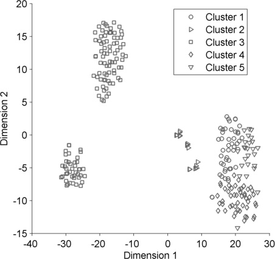
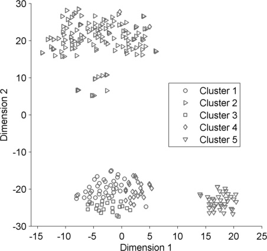
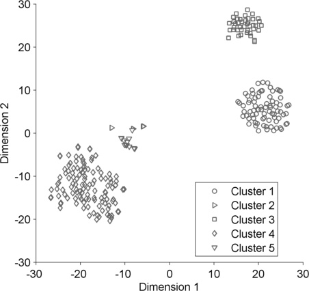
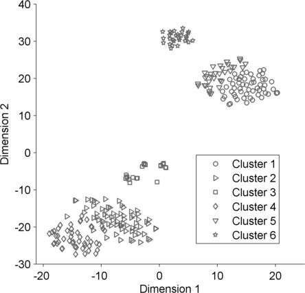
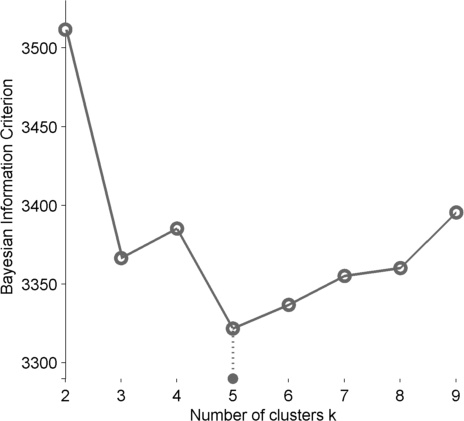
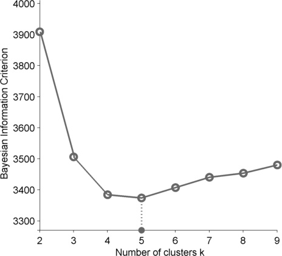
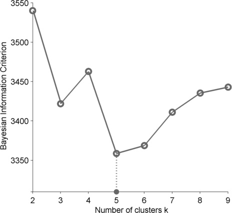
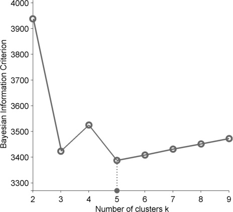
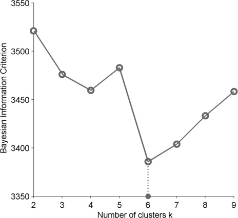

|  |  | |  |  |
|  |  |  |  |  |
| Method | Mean | SD | As best method | Average execution time (seconds) |
| Deformable Registration | 0.94 | 0.03 | 68.94 % times | 74.68 (411.47 iterations) |
| Adaptive Contour Modelling | 0.72 | 0.37 | 13.98 % times | 19.07 |
| Multi-level Thresholding | 0.88 | 0.05 | 6.21 % times | 0.09 |
| Row-by-Row Thresholding | 0.83 | 0.14 | 10.87 % times | 0.92 |
| Method | Mean (mm) | SD (mm) | As best method |
| Deformable Registration | 28.10 | 26.19 | 72.98 % times |
| Adaptive Contour Modelling | 77.88 | 28.89 | 3.42 % times |
| Multi-level Thresholding | 55.83 | 29.01 | 17.08 % times |
| Row-by-Row Thresholding | 62.31 | 31.73 | 6.52 % times |